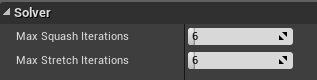
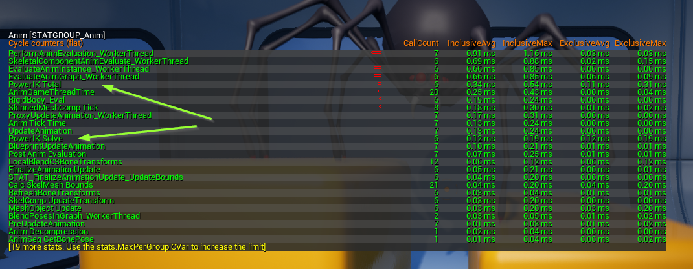

Solver Performance
Power IK uses a proprietary iterative solver that can generate nice looking poses with remarkably few iterations compared to standard IK solutions.
That said, you should be aware of the performance implications of using Power IK. Especially on resource constrained devices like mobile CPUs.
Iterations
The primary means of controlling the cost of Power IK is to adjust the number of Squash and Stretch iterations.
Both default to 6 iterations each. It is unlikely that you will need more iterations than this. Though depending on the complexity of your skeleton, you may be able to get away with less.

-
Max Squash Iterations: This is the number of iterations that the solver computes when squashing a limb. Typically, this can be left at the default. Though higher iterations may help with long complex limbs that have many bones.
-
Max Stretch Iterations: Set this as low as you can before your effectors stop reaching their targets, or if your chain forms kinks or wobbles. A value of 6 is typically good enough even for complex chains.
Note: these settings can affect performance. You should always reduce the iterations as much as you can while maintaining good results.
Solver Alpha
Power IK can be smoothly blended on/off with the Solver Alpha input. This value ranges from 0-1. At zero, Power IK will shut off completely. So this can be used as a simple way of disabling the solver completely.
Values in-between 0 and 1 will smoothly blend the skeleton from the input pose to the results of the solver.
Note: The Solver Alpha value is more efficient than the built in Alpha value that all Unreal AnimGraph nodes provide. The default Alpha value blends the resulting pose on each bone. Whereas the Solver Alpha value blends only the effectors values in the solver itself; saving the cost of blending on all the bones.
Level of Detail
The effect of Power IK on your skeletons may not be visible at a distance. Therefore it is wise blend the effect off when the distance to the skeleton exceeds your LOD threshold. This allows you to only pay the cost of Power IK where it matters most.
Every game engine and software has it's own requirements for determining when and how to switch between levels of detail. Power IK merely provides the hooks to blend itself off, using the Solver Alpha value. It's up to you to determine when to do that.
Note: If desired, you could also dynamically adjust the solver iterations based on the LOD. Power IK supports dynamically adjusting iterations.
Profiling Power IK
Power IK's core algorithms are very efficient and getting faster with each release. But regardless, it’s always important to understand exactly what it costs to run.
While playing a development build or with Play in Editor, you can execute the command:
stat anim
This will bring up a detailed breakdown of the animation performance in any given scenario. Power IK adds two entries into this list, Power IK Total and Power IK Solve.
